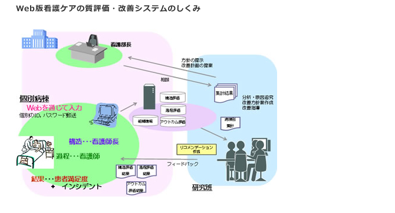

看護ケアの質評価・改善システム 一般社団法人 日本看護質評価 改善機構


一般社団法人 日本看護質評価
改善機構 代表理事 上泉 和子
Copyright ©2015 JINQI All Rights Reserved
看護ケアの質評価・改善システムとは
看護ケアの質評価・改善システムは、看護ケアの質の改善を目的とした研究により開発したものです。病棟で提供されている看護ケアの質を、自己評価し、見直していただき、改善が具体的に行えるよう提言することによって、看護ケアの質の改善に貢献することを目的としています。

本システムでは、看護の質を、３つの側面（構造structure、過程process、結果outcom）と６領域（患者への接近、内なる力を強める、家族（重要他者）の絆を強める、直接ケア、場をつくる、インシデント）で測定します。
評価は病棟ごとに行います。①構造評価は、看護師長様に、②過程評価は看護師の方に、Web上の質問に答えていただきます。③アウトカム評価は、患者満足度調査と転倒・転落・褥創・院内感染・誤薬発生率から成っています。
評価の後、病棟のケアの質についての結果と質向上をめざした改善点についての報告書（リコメンデーション）をお返しします。このリコメンデーションによって、病棟・病院において、具体的に改善の検討をしていただき、さらに看護ケアの質向上をめざしていただくために貢献したいと考えています。